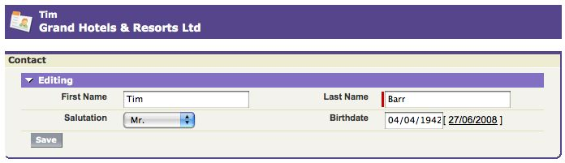
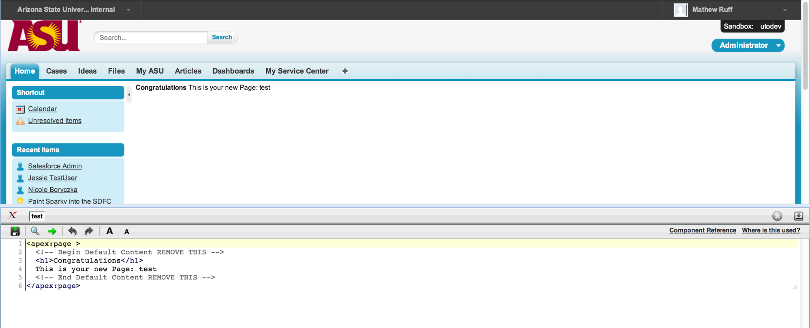
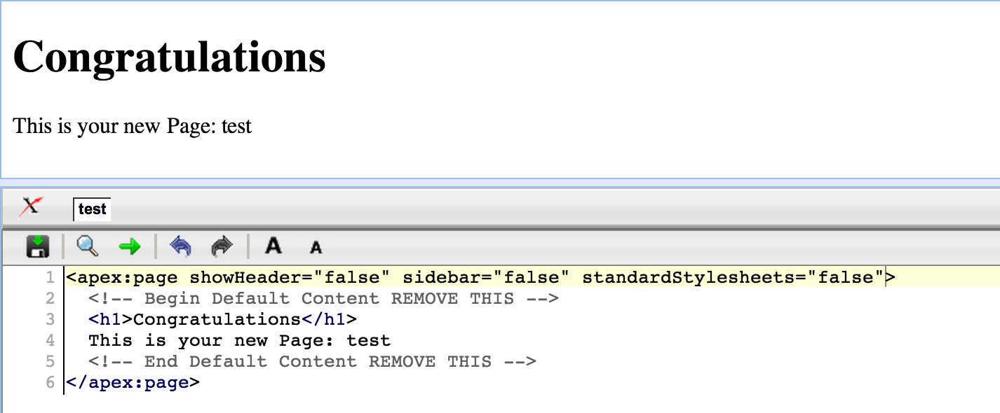
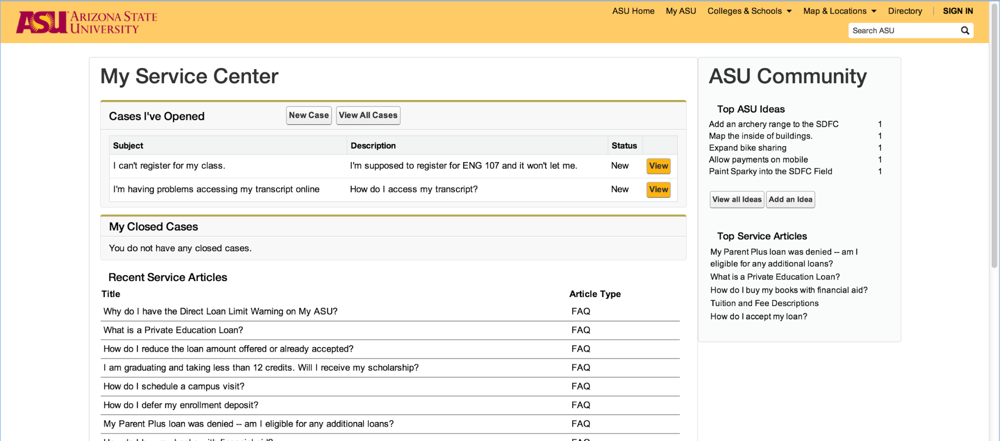
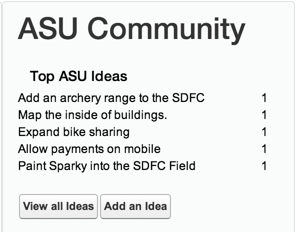

Visualforce Sample - Getting Started
This page contains some very basic Visualforce examples for new developers. Before creating the following pages, navigate to the Contacts tab, choose a contact (say Tim Barr), and select the ID. For example, if the URL of the contact ishttps://<instance>.salesforce.com/0035000000N1Gwj then his ID is 0035000000N1Gwj.
You can then pass this in as a parameter to each Visualforce page you create below. For example:
https://na3.salesforce.com/apex/mypage?id=0035000000N1Gwj
Basic Visualforce Page
Create a new Visualforce page (click your name | Setup | Develop | Pages | New), say "firstpage", to understand what the detail tag does:
<apex:page standardController="Contact">
<apex:sectionHeader title="{!contact.firstname}" subtitle="{!contact.account.name}"/>
</apex:page>
Note the expression language, which should be familiar to anyone who has written formulae. The standard controller Contact has made a method getContact() available to this page. The expression {!contact.firstname} retrieves the firstname property from the Contact returned by getContact().
Basic Page Using Detail
This second page shows the use of the detail tag:
<apex:page standardController="Contact">
<apex:detail />
</apex:page>
Page with Outputfield
Demonstrating the metadata-driven output (see the labels for example), and the standard look and feel that can be created using the standard components, this page uses the outputfield components to show more information about a contact:
<apex:page standardController="Contact">
<apex:sectionHeader title="{!contact.firstname}" subtitle="{!contact.account.name}"/>
<apex:pageBlock title="Contact">
<apex:pageBlockSection title="Details">
<apex:outputfield value="{!contact.firstname}"/>
<apex:outputfield value="{!contact.lastname}"/>
<apex:outputfield value="{!contact.salutation}"/>
<apex:outputfield value="{!contact.birthdate}"/>
</apex:pageBlockSection>
</apex:pageBlock>
</apex:page>
Page With Inputfield
The metadata is even more obvious when switching to inputfield. The following example also uses the save() method that is made available by the standard controller.
<apex:page standardController="Contact">
<apex:sectionHeader title="{!contact.firstname}" subtitle="{!contact.account.name}"/>
<apex:form >
<apex:pageBlock title="Contact">
<apex:pageBlockSection title="Editing">
<apex:inputfield value="{!contact.firstname}"/>
<apex:inputfield value="{!contact.lastname}"/>
<apex:inputfield value="{!contact.salutation}"/>
<apex:inputfield value="{!contact.birthdate}"/>
<apex:commandButton value="Save" action="{!save}"/>
</apex:pageBlockSection>
</apex:pageBlock>
</apex:form>
</apex:page>
Here's what the final page looks like:

Retrieved from “http://wiki.developerforce.com/index.php?title=Visualforce_Webinar_Getting_Started&oldid=47998”
Visualforce allows us to create and edit web pages using Salesforce’s Apex code to pull data from our organization and object and display them on our site. Just like a normal website we can use HTML, CSS and Java to hard code pages allowing us to fully customize our site’s look and feel.
In order to get started with a new webpage all we need to do is log into our Salesforce environment and add:
to the end of our url. Salesforce will do the work for you and ask if you'd like to create a new page. Alternatively, you can go to Setup > Develop > Pages > New. Once we create the page we will be taken to the url for the page and you will see the Salesforce sidebar and navigation bar with the main page content reading: Congratulations this is your new page! In order to edit the page (if you don't already see the page editor toolbar at the bottom) you'll need to go to Setup > Users > Select your username > Edit > Check the box for 'Enable Development Mode' > Save.
Once we're on the page you will see the Dev Console on the bottom of the page:

In here is where we will be writing our code. The way Apex requires you to write a web page isn’t all that different than HTML. The basic structure (and how I like to do it) is as follows:
Because Visualforce allows us to code in HTML and import our own CSS stylesheets we can really make the page not only display our data with Salesforce, but look great too! In order to get our own styles going on the page we’ll need to add some arguments to the apex:page tag at the top:
These do exactly what you’d think, removes the header, sidebar, and Salesforce stylesheets from the page. The result looks like this:

As you can see, we’ve just turned this page into a standard HTML page. From this point on you can add any kind of code/sources/libraries/etc. just like you would normally. However there are a few things you’ll need to know about adding resources with Apex.
For example instead of writing CSS on the page itself, you can include it in the page from a static resource. Click Setup > Develop > Static Resources > and upload your .css file. In order to include the file on the page, type:
where the part after “{!$Resource.” is the name you gave the file during the upload. The same thing goes for Javascript. You can upload your .js file and include it by typing:
<apex:includeScript value="{!$Resource.example_js}"/>
If you don’t want to utilize the include statements, you can still edit script and css on the page with the standard <script> and <style> tags. What I’ve done with my page is implemented a little Twitter Boostrap to make it responsive and added my own theme:

More information on Visualforce tags, Apex, and Static Resources can be found -
> Building a Site with Salesforce
So now we’ve got the layout for our page, we want to start putting data from Salesforce into it. The way Salesforce displays our data is through Controllers. Salesforce describes them as:
“...a set of instructions that specify what happens when a user interacts with the components specified in associated Visualforce markup, such as when a user clicks a button or link. Controllers also provide access to the data that should be displayed in a page, and can modify component behavior.
The Force.com platform provides a number of standard controllers that contain the same functionality and logic that are used for standard Salesforce pages. For example, if you use the standard Accounts controller, clicking a Save button in a Visualforce page results in the same behavior as clicking Save on a standard Account edit page.
A standard controller exists for every Salesforce object that can be queried using the Force.com API.”
With these instructions we will be able to display our objects on the page. So let’s say you’re like me and you wanted to display the top 10 Ideas in your organization on the page. We will write a controller to query the database and return the results:
This controller creates a small array called Idea[] that will grab the Id, Title, Vote Total, and Number of Comments from the Idea Object and order them by the number of votes descending. But we can’t do much with this unless we write the correct code to display it on the page.
On the Visualforce page, add the name of the controller to the <apex:page> tag: controller=”IdeaListController”. This will have the page call that controller to get the data. But in order to actually display the data on the page we need to call it in a pageblock.
In this code snippet we’ve created a pageBlock (salesforces way of displaying information) with a datalist nested inside a panelGrid to show our outputText. The output text we’ve called is the Title and Vote Total from the object Idea written as {!idea.title}. For the Vote Total, we’ve taken it and divided the total number by 10 (Salesforce automatically scores an upvote 10 point for every one vote, in this example we want just the total number of votes, therefore we’ve divided by 10) to achieve our count total.
With some customization, we can get it looking real good:

With Visualforce we can display our data any way we want to fairly easily. Salesforce does all the work for you in the cloud without having to worry about server maintenance and data management on our end. If you’d like a more detailed example check out the docs from Salesforce: